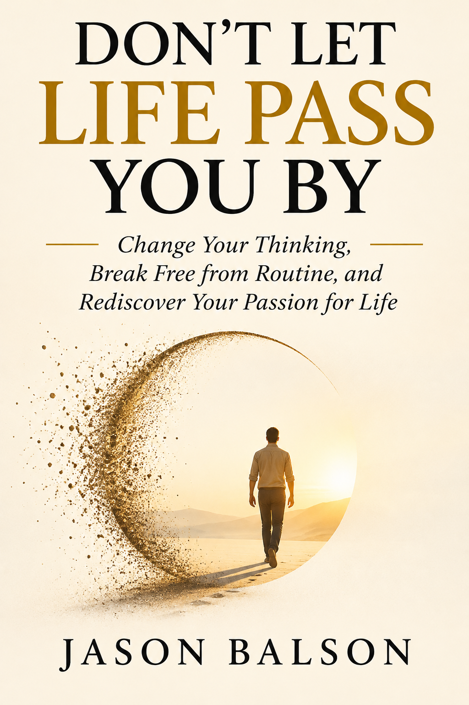
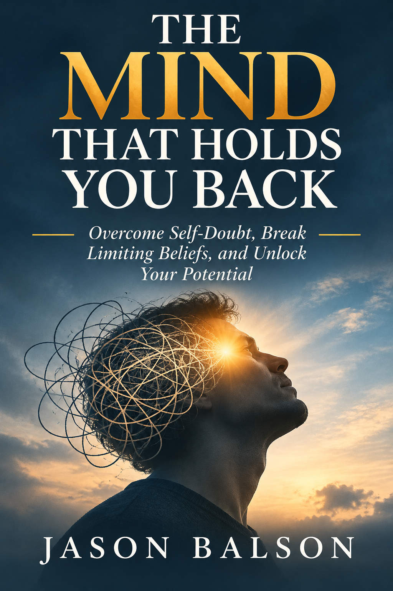
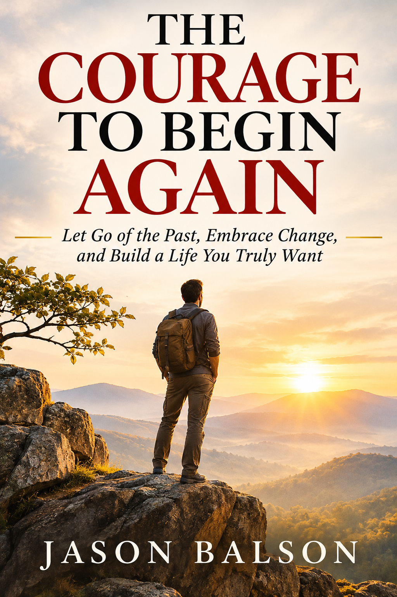
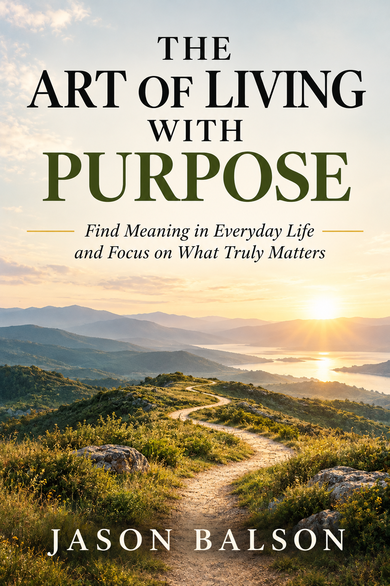

Don't Let Life Pass You By
Break free from the routines and thought patterns that keep you from living fully. Discover how small, conscious changes can help you rediscover your passion for life and create a more rewarding future.
Exploring the power of thought, the courage to change, and the art of living a more meaningful life.
Explore the Books
Jason Balson is an author with a background rooted in Rhode Island, where his story begins in 1962.
His writing explores human behavior, personal growth, the power of thought, and the challenges of meaningful change.
Through a thoughtful and accessible approach, Balson examines the invisible patterns that shape our decisions, relationships, habits, and sense of purpose. His work encourages readers to question limiting beliefs, move beyond fear, and rediscover the possibilities that everyday life has to offer.
At the heart of his writing is a simple conviction: it is never too late to change direction, find renewed purpose, and create a more meaningful life.
His books combine reflection with practical insights, offering readers a starting point for their own journey of personal transformation.
Explore a collection dedicated to personal growth, self-discovery, and the courage to change. Each book offers a different perspective on building a more meaningful and fulfilling life.

Break free from the routines and thought patterns that keep you from living fully. Discover how small, conscious changes can help you rediscover your passion for life and create a more rewarding future.

Explore the invisible barriers created by fear, self-doubt, and limiting beliefs. Learn to question the thoughts that undermine your confidence and discover new possibilities for personal growth.

Every ending holds the possibility of a new beginning. Discover how to move beyond the past, embrace uncertainty, and find the courage to build a life that reflects who you truly want to become.

In a world filled with distractions, finding meaning can be a challenge. Reconnect with your values, rethink your priorities, and discover the quiet fulfillment of living with intention.
Personal growth begins with awareness. By understanding the way we think, questioning our assumptions, and making conscious choices, we can gradually transform the way we experience life.
Reflections on personal growth, human nature, and the small discoveries that can change the way we experience life.
We cannot change what we refuse to notice. The moment we begin to observe our thoughts instead of simply believing them, we open the door to a different way of living.
Familiarity can feel like safety, even when it no longer brings us happiness. Growth begins when we become willing to explore what lies beyond the boundaries of our everyday routines.
Courage is not the absence of fear. It is the ability to recognize fear without allowing it to make every important decision in our lives.
Our past may explain who we have become, but it does not have to determine who we will be. Every day offers an opportunity to respond to life differently.
Meaningful transformation rarely happens overnight. It grows quietly through the ordinary choices we make, the habits we develop, and the promises we keep to ourselves.
A fulfilling life is not necessarily a life filled with extraordinary moments. It is a life in which we are present enough to recognize the extraordinary within the ordinary.